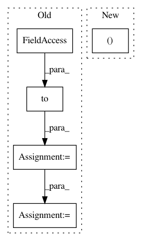

aa40fe1aa0382bf5148d1475dd647def1d2ed332,TTS/tts/models/speedy_speech.py,SpeedySpeech,forward,#SpeedySpeech#,59
Before Change
x_emb = torch.transpose(x_emb, 1, -1)
// compute sequence masks
x_mask = torch.unsqueeze(sequence_mask(x_lengths, x.shape[1]),
1).to(x.dtype)
y_mask = torch.unsqueeze(sequence_mask(y_lengths, None),
1).to(x_mask.dtype)
// encoder pass
o_en = self.encoder(x_emb, x_mask)
// duration predictor pass
o_dr_log = self.duration_predictor(o_en.detach(), x_mask)
// expand o_en with durations
o_en_ex, attn = self.expand_encoder_outputs(o_en, dr, x_mask, y_mask)
// positional encoding
if hasattr(self, "pos_encoder"):
o_en_ex = self.pos_encoder(o_en_ex, y_mask)
// decoder pass
o_de = self.decoder(o_en_ex, y_mask)
return o_de, o_dr_log.squeeze(1), attn.transpose(1, 2)
def inference(self, x, x_lengths, g=None): // pylint: disable=unused-argument
After Change
return o_de, attn.transpose(1, 2)
def forward(self, x, x_lengths, y_lengths, dr, g=None): // pylint: disable=unused-argument
o_en, o_en_dp, x_mask, g = self._forward_encoder(x, x_lengths, g)
o_dr_log = self.duration_predictor(o_en_dp.detach(), x_mask)
o_de, attn= self._forward_decoder(o_en, o_en_dp, dr, x_mask, y_lengths, g=g)
return o_de, o_dr_log.squeeze(1), attn
In pattern: SUPERPATTERN
Frequency: 3
Non-data size: 5
Instances
Project Name: mozilla/TTS
Commit Name: aa40fe1aa0382bf5148d1475dd647def1d2ed332
Time: 2021-01-06
Author: erogol@hotmail.com
File Name: TTS/tts/models/speedy_speech.py
Class Name: SpeedySpeech
Method Name: forward
Project Name: mozilla/TTS
Commit Name: aa40fe1aa0382bf5148d1475dd647def1d2ed332
Time: 2021-01-06
Author: erogol@hotmail.com
File Name: TTS/tts/models/speedy_speech.py
Class Name: SpeedySpeech
Method Name: inference
Project Name: rusty1s/pytorch_geometric
Commit Name: 50822819b664cd9d751d410a5eabd4cc0688311d
Time: 2020-11-03
Author: matthias.fey@tu-dortmund.de
File Name: examples/tgn.py
Class Name:
Method Name: